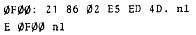
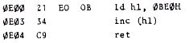
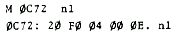
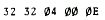
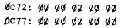
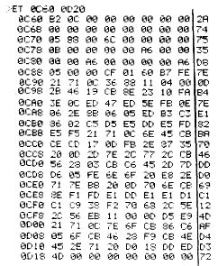

Nascom Journal |
4/80 |
Für unseren Nascom-Scheduler sieht die Sache nun so aus:
Für die Interrupt-Steuerung wird ein TTL-Rechteck benötigt, das zum Beispiel vom unbenutzten TTY-Taktgenerator geliefert werden kann. Die Frequenz sollte zwischen 50…100 Hz liegen. Dazu ist der 22nF’ Kondensator am 555’er gegen einen 2,2uF auszutauschen. Der nun verfügbare TTL-Zeittakt wird auf B0 des PIO-Sockels Port A geführt. Das PIO wird durch die Steuerworte auf 0C8B…0C8F nun so programmiert, daß bei jedem Takt ein Interrupt zur Adresse 0CB2 ausgelöst wird. Die TCL für maximal 5 Tasks beginnt auf der Adresse 0C72.(insgesamt 25 Bytes).
Nachdem das Programm von Hand oder Cassette geladen worden ist, wird der Scheduler durch E 0C90 aktiviert. Danach kehrt der Prompt sofort zurück. Tut er das nicht, ist das PIO nicht zurückgesetzt. Die einfachste Art, dieses zu erledigen, ist die, den Rechner kurz auszuschalten. Die andere: Auf Adresse 0F00 wird eingegeben:
Ist nun dies in Ordnung, kann folgendes ausprobiert werden:
alle Tasks müssen mit RET enden!!
Dieses kurze Programm läßt ASCII-Zeichen in der obersten Zeile durchlaufen. Nun muß dieses Programm in die TCL eingetragen werden:
Sobald diese Daten eingetragen sind, wird das Programm alle 32 Zeittakte aufgerufen. Die Daten müssen entweder in einer Zeile eingetragen werden oder so, daß die 04 als Status als letztes Byte eingetragen wird. Der Nascom-Monitor läuft dabei immer auf der niedrigsten Priorität. Die Befehle B, S oder E sind mit Vorsicht zu benutzen, da sie den SP verändern. Der E-Befehl wird weiterhin auch gar nicht mehr benötigt, da die auszuführenden Programme ja vom Scheduler verwaltet werden.
Soll ein Programm nicht mehr aufgerufen werden, reicht der Status-Eintrag 00.
Eine schöne Anwendung ist die beigefügte Echtzeit-Uhr. In den angegebenen Speicherstellen ist die aktuelle Uhrzeit einzutragen. Der zugehörige Task-Control-Block:
Die obigen Taktintervalle setzen voraus, daß der Interrupt-Takt auf 50 Hz abgeglichen wird ( 0.02 sek x 50 = 1 sek zwischen jedem Uhraufruf ).
Mit etwas Programmiererfahrung ist mit dem Scheduler auch eine sehr komfortable Ausgabe auf Druckern und Cassettenrecordern möglich. Der Phantasie sind keine Grenzen gesetzt, wenn man mit 5 Tasks auskommt. Eine Ausweitung auf beliebig viele Tasks ist ohne weiteres möglich.
Aktivierung: E 0C90
Task-Control-Block:
etc.
| Seite 7 von 20 |
|---|